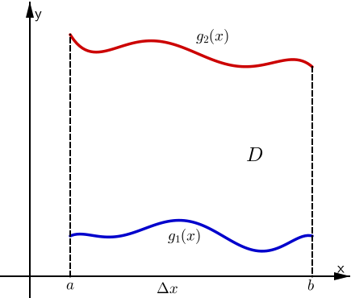
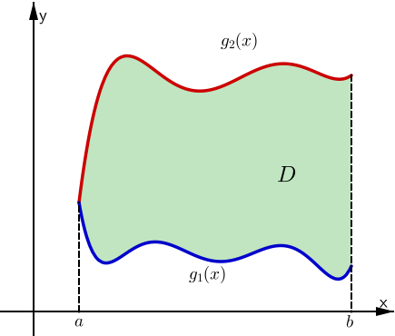
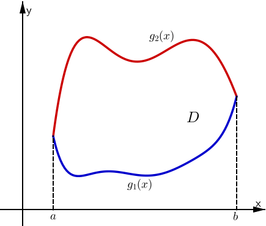
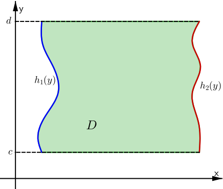
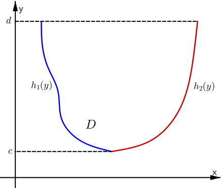
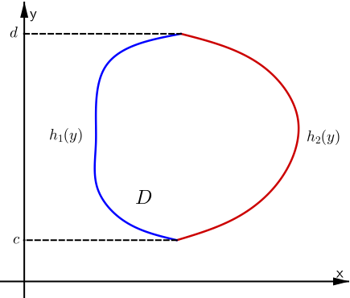

Chapter 25
By the end of this section, you should be able to answer the following questions:
|
A plane region $D$ is of type I if it lies between the graph of two continuous functions of $x$. That is $$D=\left\{ (x,y) ~|~ a \leq x\leq b, g_1(x) \leq y \leq g_2(x) \right\}.$$ In practice, to evaluate $\iint_D f(x,y)dA$ where $D$ is a region of type I we have \[ \iint_D f(x,y)~dA = \int_a^b \int_{g_1(x)}^{g_2(x)} f(x,y) ~dy~dx \] |

Type I regions are generally bounded by two constant values of $x$ and two functions of $x$. |
|  |  |
|---|
Some more examples of type I regions.
where $D$ is the region between the parabola $y=x^2$ and the line $y=x+2$.
Type I region with $x^2 \leq y \leq x+2.$
We need to find $a$ and $b$ by solving \[ \left\{\begin{array}{ll} y=x^2\\ y=x+2 \end{array}\right. \] for $x$.
Here we have $x^2=x+2$ $\Ra x = -1, x = 2$ $\Ra a = -1, b = 2.$
Then $D= \left\{ (x,y) ~|~ -1\leq x\leq 2, ~x^2\leq y\leq x+2\right\}$.
| $I $ | $\displaystyle = \displaystyle \int_{x=-1}^{x=2} \left[ \int_{y=x^2}^{y=x+2} \left(4x+10y\right)dy \right]dx $ |
| $ = \displaystyle \int_{x=-1}^{x=2} \left[ \left( 4xy + 10 \frac{y^2}{2} \right) \Bigg|_{y=x^2}^{y=x+2} \right] dx $ | |
| $= \displaystyle \int_{x=-1}^{x=2} \left[ 4x(x+2) + 5 (x+2)^2 -\left( 4x\left(x^2\right) + 5 \left(x^2\right)^2 \right) \right]dx$ | |
| $ = \displaystyle \int_{x=-1}^{x=2} \left( -5 x^4 - 4 x^3 + 9 x^2 + 28 x + 20 \right) dx$ | |
| $= \displaystyle \left( -x^5 - x^4 + 3 x^3 + 14 x^2 + 20 x\right)\Bigg|_{x=-1}^{x=2}$ $= \displaystyle 81.$ |
|
A plane region is of type II if it can be expressed by $$D=\left\{ (x,y) ~|~ c \leq y\leq d, h_1(y) \leq x \leq h_2(y) \right\}.$$ In practice, to evaluate $\iint_D f(x,y)dA$ where $D$ is a region of type II we have \[ \iint_D f(x,y)dA = \int_c^d \int_{h_1(y)}^{h_2(y)} f(x,y) ~dx~dy \] |

Type II regions are generally bounded by two constant values of $y$ and two functions of $y$. |
|  |  |
Some more examples of type II regions.
where $D$ is the region between the line $y=x-1$
and the parabola
$y^2=2x+6$.
Type II region. We know that $y=x-1$ and $y^2=2x+6$. So $x=y+1$ and $x=\frac{1}{2}y^2-3$. Then $\frac{1}{2}y^2-3\leq x\leq y+1$.
We need to find $c$ and $d$ by solving \[ \left\{\begin{array}{ll} x=\frac{1}{2}y^2-3\\ x=y+1 \end{array}\right. \] for $y$. Here we have $\frac{1}{2}y^2-3=y+1$ $\Ra y = -2, y = 4$ $\Ra c = -2, d = 4.$
Then $D= \left\{ (x,y) ~|~ -2\leq y\leq 4, ~\frac{1}{2}y^2-3\leq x\leq y+1\right\}$.
| $I$ | $ = \displaystyle \int_{y=-2}^{y=4} \left[ \int_{x=\frac{1}{2}y^2-3}^{x=y+1} xy~ dx \right]dy$ $ = \displaystyle \int_{y=-2}^{y=4} \left[ y~ \frac{x^2}{2} \Bigg|_{x=\frac{1}{2}y^2-3}^{x=y+1} \right] dy $ |
| $= \displaystyle \int_{y=-2}^{y=4} \left[ y~ \frac{(y+1)^2}{2} - y~ \frac{\left(\frac{1}{2}y^2-3\right)^2}{2} \right]dy $ | |
| $= \displaystyle \int_{y=-2}^{y=4} \left( -\frac{y^5}{8} + 2 y^3 + y^2 - 4 y \right) dy$ | |
| $= \displaystyle \left( -\frac{y^6}{48} + \frac{y^4}{2} + \frac{y^3}{3} - 2 y^2 \right)\Bigg|_{y=-2}^{y=4} $ $= \displaystyle 36.$ |
Upper region - Type I: \[ \int_{-1}^1 \left[ \int_{y=1}^{y=x^2+1} f(x,y) dy\right]dx \]
Lower region - Type II: \[ \int_{-1}^1 \left[ \int_{x=-1}^{x=y^2} f(x,y) dx\right]dy \]
Then
$\displaystyle \iint_\limits{D} f(x,y) ~dA$
$\displaystyle = \iint_\limits{\text{upper}} f(x,y)~ dA + \iint_\limits{\text{lower}} f(x,y) ~dA \qquad \qquad \qquad $
$ \;\displaystyle = \int_{-1}^1 \int_{y=1}^{y=x^2+1} f(x,y)~ dy~dx + \int_{-1}^1 \int_{x=-1}^{x=y^2} f(x,y) ~dx~dy . $